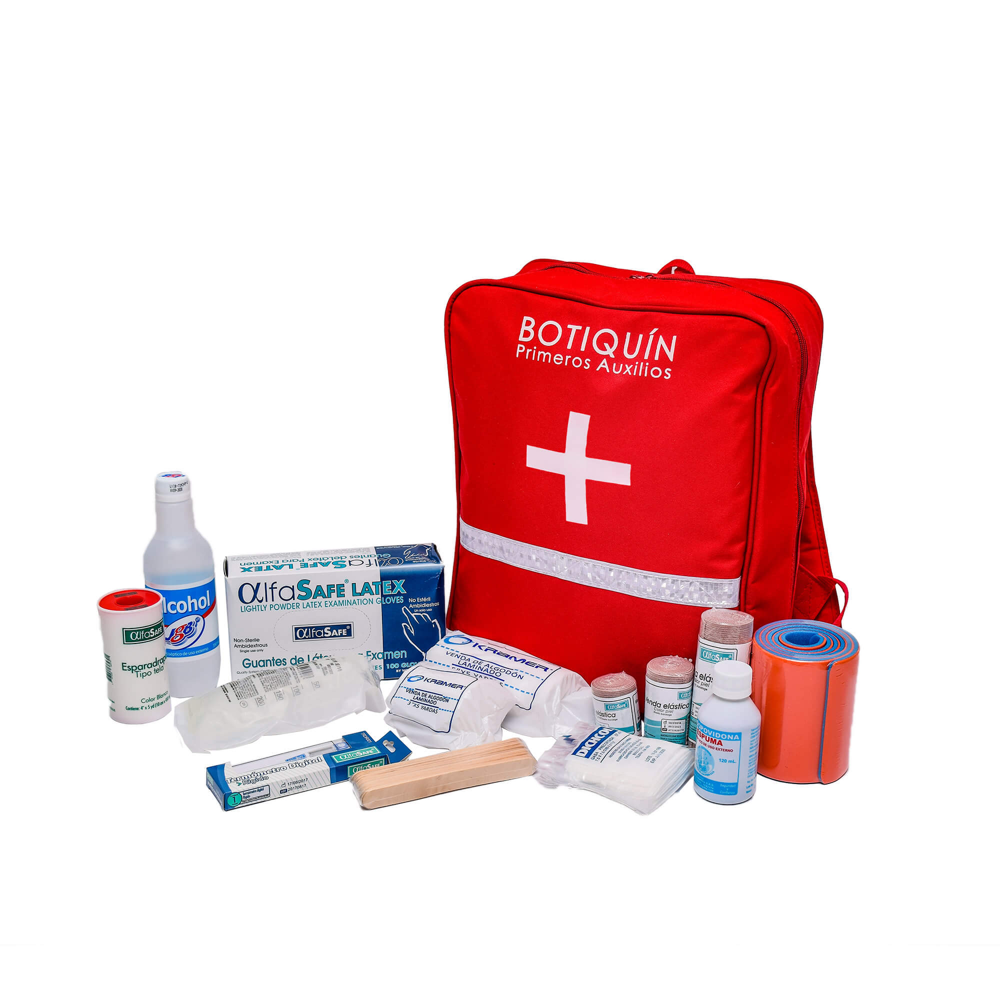
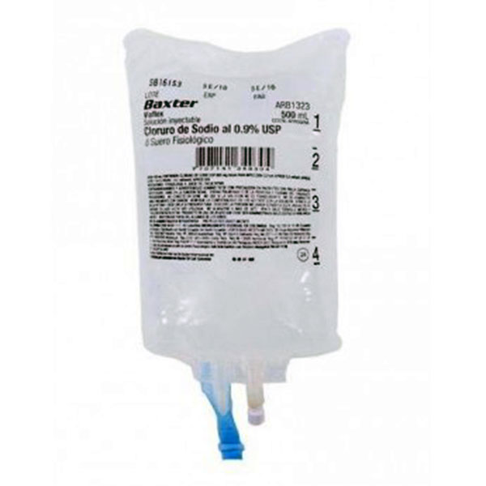
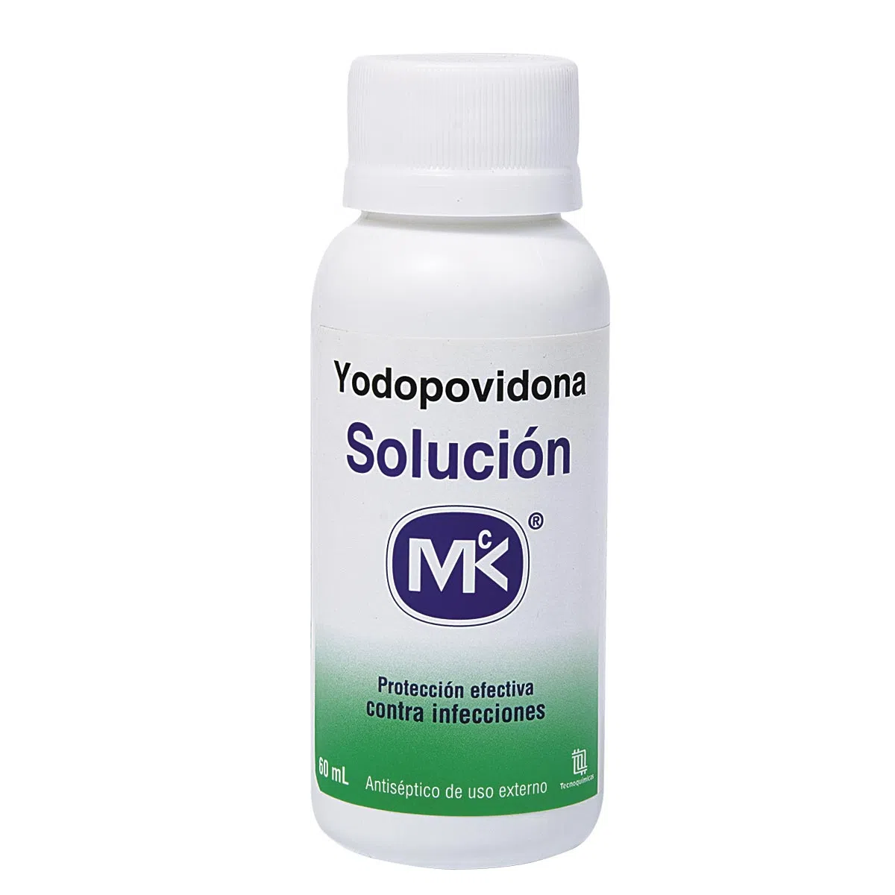
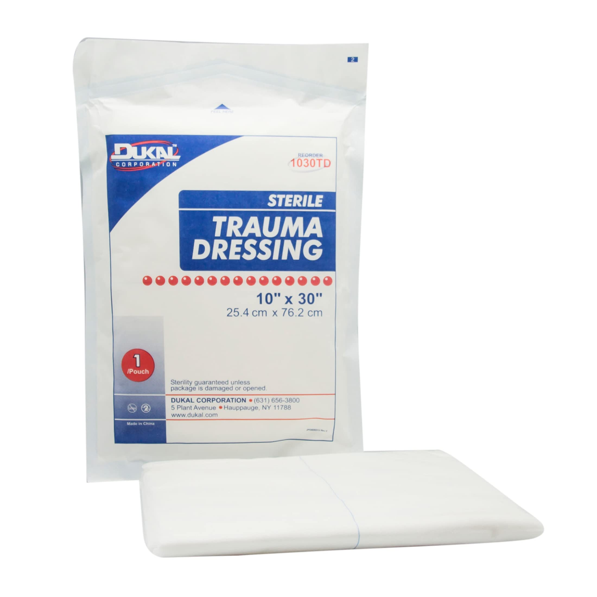
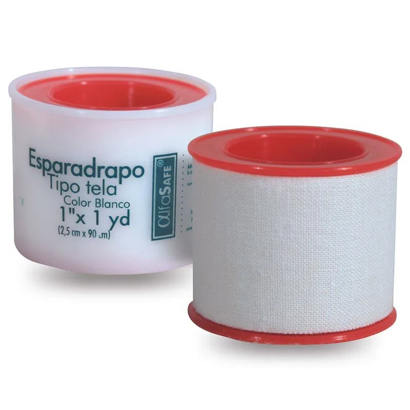
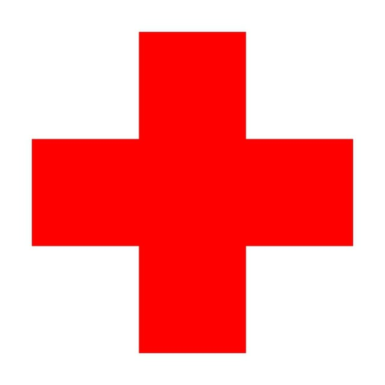
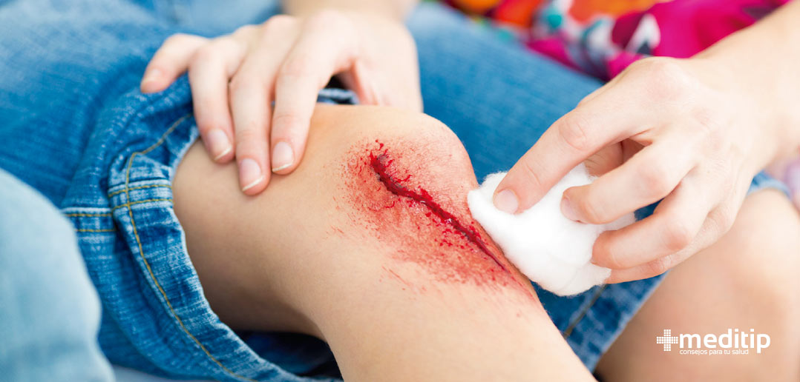
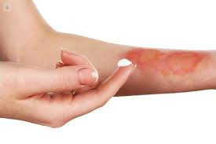

PRIMEROS AUXILIOS
indice
- Normas básicas del manejo del botiquín
- Antisépticos
- Material de curación
- Apósitos
- Esparadrapo
- Heridas
- Reanimación cardiopulmonar básica (R.C.P.
- Maniobra de Heimlich
BOTIQUIN
Resolución 705 de 2007, la cual establece una obligatoriedad de tener un botiquín de primeros auxilios en lugares donde se desarrolle cualquier tipo de actividad —Botiquín tipo A: El botiquín tipo A será para establecimientos comerciales de una superficie menor a 2.000 metros cuadrados. —Botiquín tipo B: El botiquín tipo B será para establecimientos o centros comerciales con una superficie de entre 2.000 y 15.000 metros cuadrados. —Botiquín tipo C: El botiquín tipo C será para centros comerciales de una superficie mayor a 15.000 metros cuadrado.
Normas básicas del manejo del botiquín
Los botiquines, en ningún caso, solucionarán problemas mayores de salud, sólo sirven para ayudar a brindar los primeros auxilios y solucionar problemas menores, tampoco el botiquín reemplazará los servicios de una farmacia. —Los botiquines no deben contener medicamentos que pueden ser peligrosos para la salud sin prescripción médica, por ejemplo: antibióticos, antihipertensivos (medicamentos para la presión arterial alta), cardiotónicos, todo tipo de inyectables y jeringas, etc. —El diseño de un botiquín de primeros auxilios debe ser para gente que no tenga conocimientos médicos ni farmacológicos, pero que haya recibido entrenamiento en primeros auxilios. —Los botiquines deben ser revisados mensualmente en su reposición y fechas de caducidad de los medicamentos. Los elementos faltantes deben ser reemplazados. —Todos los elementos caducados deben ser desechados inmediatamente. Los elementos que por algún motivo estén fuera de sus cajas, en el que no se aprecie el nombre del producto ni la fecha de caducidad o tengan algún tipo de daño en su presentación, deben ser desechados.
Antisépticos
Solución salina o suero fisiológico Son sustancias que previenen la infección, evitando la presencia de gérmenes que por lo general se encuentran presentes en lesiones como consecuencia de accidentes. Estas son: —La solución salina refiere en medicina a todo suero para reposición hídrica que contenga cloruro de sodio (NaCl) desde el suero fisiológico pasando por sueros hipotónicos a hipertónicos. —Se utiliza con frecuencia en vías intravenosas de pacientes que no pueden tomar líquidos por vía oral y están en peligro de desarrollar deshidratación o hipovolemia. A menudo se utiliza para lavar heridas y para derramar sobre superficies quemadas en la piel. La solución salina normal no arde o pica cuando se aplica.
Solución desinfectante para zonas donde se aplicarán inyecciones y para limpieza del termómetro. —Medicamento antiséptico de uso externo, empleado para la desinfección de la piel. —Útil como complemento al lavado higiénico de manos con agua y jabón. —Instrucciones de uso: Aplicar en la zona de la piel afectada las veces que sea necesario. No aplicar directamente sobre heridas abiertas o mucosas. —Contraindicaciones y Advertencias: No debe ser ingerido.
—Clorhexidina o yodopovidona (jabón quirúrgico): —Antiséptico útil para desinfectar heridas, lavados de manos y equipos. Este antiséptico es el recomendado para cuando las personas resultan ser alérgicas a las soluciones yodadas. —Modo de empleo: Aplique sobre la piel y/o superficie afectada frotando suavemente; deje actuar por corto tiempo antes de enjuagar con abundante agua.
Material de curación
Gasas: —Conjunto de elementos que pueden ser limpios o estériles, utilizados para limpieza y protección de heridas y quemaduras, así como el control de hemorragias entre otros. Algunos de ellos son: —Elementos de tela tejida, especificada para el tratamiento de heridas, hemorragias y material. Idealmente conseguir las que previamente son cortadas. —Gasa no estéril no tejida: Se utiliza para heridas pequeñas que no comprometen tejidos, ejemplo raspaduras, cortaduras pequeñas y de uso odontológico. —Gasa esterilizada: La gasa esterilizada es ampliamente utilizada en primeros auxilios, accidentes, e higiene de todo tipo. Su principal característica es que está libre de gérmenes y no deja filamentos pegados en la superficie de la piel. Su principal objetivo es evitar infecciones en heridas abiertas, impidiendo que agentes patógenos pasen a través de los vendajes.
Apósitos o compresas
Aceleran el proceso de curación en hasta un 50% y son adecuados para cubrir todo tipo de heridas de tamaño reducido, incluso las causadas por intervenciones quirúrgicas menores. —Para obtener resultados curativos óptimos, el apósito debe llevarse durante varios días. El material delgado, impermeable al agua, aísla la herida para protegerla frente a bacterias. La almohadilla en contacto con la herida, confeccionada con un material de poliuretano respetuoso con la piel, absorbe selectivamente el líquido de la herida mientras mantiene la humedad en la misma, acelerando de este modo la curación y reduciendo el riesgo de formación de cicatrices. La fuerte adherencia asegura que el apósito permanezca en la zona durante varios días.
Esparadrapo o micropore
Se utiliza para fijar gasas, apósitos y vendas, inmovilizar, afrontar bordes de heridas y cubrirlas. —La venda elástica brinda una compresión uniforme y suave sobre el tejido que rodea una lesión, para disminuir el dolor y la inflamación. La venda elástica también brinda soporte a una zona lesionada. Es posible que necesite una venda elástica, por cualquiera de las siguientes razones: —Para mejorar la circulación (flujo) de la sangre hacia cualquier extremidad del.
Algodón: —Se utiliza para limpiar las partes no heridas o humedecer los antisépticos con los cuales se desinfectarán las zonas no abiertas de la piel. También puede ser usado entre dos capas de gasa para confeccionar un apósito.
Guantes de latex: —El uso de los guantes de látex para auxiliar un accidentado es cada vez más común para evitar el contagio de enfermedades. En la mayoría de los cursos de primeros auxilios y socorrismo, se enseñan técnicas para ponerse y sacarse los guantes evitando que la sangre o fluido sobre el guante entre en contacto con la piel o la ropa del socorrista. Bajalenguas: —Porción pequeña de madera muy elaborada que sirve para inmovilizar y aplicar medicamentos o pomadas. Una vez utilizadas deben ser desechadas.
Termómetro: La temperatura corporal normal de los seres humanos varía entre los 36'5-37'5ºC. En aquellos casos que la temperatura se sitúa fuera de esos parámetros, en general se habla de: Hipotermia, cuando la temperatura corporal es inferior a los 36º. Febrícula, cuando la temperatura es de 37.1-37. 9º. Hipertermia o fiebre, cuando la temperatura es igual o superior a 38º Tijera: Para cortar la ropa cuando sea necesario, en el paciente quemado o fracturado, para evitar desgarros de tejidos o movimientos inadecuados.
Collar cervical: Se debe usar siempre que se sospeche la posibilidad de la lesión cervical. —Inmovilizadores o ferulas: Las férulas se utilizan para mantener en su posición o sostener e inmovilizar partes del cuerpo, particularmente las móviles o articuladas de manera temporal o provisional fracturas o luxaciones de extremidades y articulaciones. Para corregir o evitar deformidades. —Fonendoscopio o estetoscopio Consiste en escuchar de manera directa o por medio de instrumentos como el estetoscopio, el área torácica o del abdomen, para valorar los sonidos normales o patológicos producidos en los órganos (contracción cardíaca, soplos cardíacos, peristaltismo intestinal, sonidos pulmonares, etc.
TensiometroDigital: La presión arterial se mide con los tensiómetros y es la fuerza de la sangre empuja contra las paredes de los vasos sanguíneos. Es la fuerza de la sangre en las paredes de las arterias cuando el corazón bombea sangre a través del cuerpo. Por lo general se escriben con la presión arterial sistólica en primer lugar, seguido por una barra, entonces la presión arterial diastólica. Es la fuerza, ejercida por la sangre que circula en la pared de los vasos sanguíneos. La presión arterial medida por los tensiómetros es la resistencia ofrecida al flujo de sangre en los vasos sanguíneos.
Jeringas: Las jeringasson tubos cilíndricos de plástico o de cristal, graduados, provistos de un émbolo y un estrechamiento en un extremo destinado a la introducción o aspiración de líquido en conductos, cavidades o tejidos del cuerpo. Se presentan en envase individual estéril termosellado con o sin Protector Ocular: —Un parche para el ojo es un parche pequeño que se utiliza para cubrir un ojo.
Manual básico primeros auxilios: Conjunto de actuaciones y técnicas que permiten la atención inmediata de un accidentado, hasta que llegue la asistencia médica profesional, con el fin de que las lesiones que ha sufrido “NO EMPEOREN”. El derecho a la vida, la salud y la integridad física es un deber que todos tenemos obligación de proteger.
Primeros Auxilios —Son los cuidados o la ayuda inmediata, temporal y necesaria que se le da a una persona que ha sufrido un accidente, enfermedad o agudización de esta hasta la llegada de un médico o profesional paramédico que se encargará, solo en caso necesario, del trasladado a un hospital tratando de mejorar o mantener las condiciones en las que se encuentra.
Actuación de quien socorre
Fundamental mantener el control de sí mismo y no dejarse llevar por el pánico, ya que con él se inicia la cadena de socorro sanitario. — La actuación de un socorrista ante un accidente, independientemente de la gravedad de la persona accidentada, deberá ser la siguiente: — Autoprotección y protección a las víctimas — Hay que valorar, antes de actuar, los riesgos potenciales que para sí mismo o para la víctima puede conllevar su actuación, evitando siempre que, como consecuencia de ella, se produzca más daño o más víctimas. — Solicitud de ayuda — Inicio de la cadena de socorro (sanitarios, bomberos, policías, etc.). — Mantener siempre la calma y tranquilizar a las víctimas — La evaluación de la víctima nos llevará a saber realizar de forma básica una exploración de constantes vitales (conciencia, respiración y pulso).
Primer respondiente
El Primer respondiente, es la primera persona que decide participar en la atención de un lesionado. Puede o no ser un profesional de la salud. Es el encargado de evaluar la escena, comenzar la revisión del lesionado y activar al servicio médico de urgencia, conocido en los medios urbanos como Sistema de Atención Médica Prehospitalaria de Urgencias o Servicio Metropolitano de Urgencias . Las obligaciones del primer respondiente son: —Tener el primer contacto con el lesionado. —Pedir ayuda porque no siempre se puede trabajar adecuadamente solo. —Realizar la evaluación primaria del paciente. (Revise) —Solicitar el apoyo de los cuerpos de emergencia adecuados. (Llame). —Liberar la vía aérea. (Atienda) —En caso necesario iniciar RCP (básico). —Dar datos del padecimiento o atención a los servicios de Emergencia al llegar.
Signos vitales

Los signos vitales son parámetros clínicos que reflejan el estado fisiológico del organismo humano, y esencialmente proporcionan los datos (cifras) que nos darán las pautas para evaluar el estado homeostático del paciente, indicando su estado de salud presente, así como los cambios o su evolución, ya sea positiva o negativa. —También son conocidos como las mediciones funcionales más básicas del cuerpo. —Orientan sobre alteraciones de salud, el estado fisiológico de los órganos fundamentales (cerebro,corazón,pulmones). —Los signos vitales incluyen: Temperatura, frecuencia respiratoria, frecuencia cardiaca y presión.
Temperatura
Parámetros normales en recién nacidos 36.1-37.7 ºC. —Parámetros normales en lactantes 37.2 ºC. —Parámetros normales en niños 37 ºC —Parámetros normales en adultos 36-37ºC.
Frecuencia respiratoria
• Parámetros normales en recién nacidos 30-80 ciclos por minuto. • Parámetros normales en lactantes 20-40 (en lactante menor) 20-30 (en lactante mayor) ciclos por minuto. • Parámetros normales en niños 20-30 (niños de 2-4 años) 20-25 (de6-8 años) ciclos por minuto. • Parámetros normales en adultos 12-20 ciclos por minuto.
Frecuencia cardiaca - puls
• Parámetros normales en recién nacidos 120-170 latidos por minuto. • Parámetros normales en lactantes 120-160 (en lactante menor) 110-130 (en lactante mayor) latidos por minuto. • Parámetros normales en niños 100-120 (niños de 2-4 años) 100-115 (de 6-8 años) latidos por minuto. • Parámetros normales en adultos 60-80 latidos por minuto.
Presión arterial
• Parámetros normales en recién nacidos 60/30 mmHg a 90/62 mmHg (igual que lactante menor). • Parámetros normales en lactantes 60/30 mmHg a 90/62 mmHg. • Parámetros normales en niños 78/48 mmHg a 112/78 mmHg (en niños de 2 años); 85/52 mmHg a 114/85 mmHg (en niños de 8 años); 95/58 mmHg a 135/88 mmHg (en niños de 12 años). • Parámetros normales en adultos 100/60 mmHg a 140/90 mmHg.
Heridas
Tranquilizar al herido para evitar que sienta mayor dolor y ansiedad. —Preparar o disponer próximamente del material necesario para la cura (botiquín) —Lavarnos las manos con agua y jabón para evitar contaminar más la herida. Si tenemos guantes estériles o limpios, usarlos. —Cubrir, antes de actuar, la herida con un apósito estéril. —Si la herida está sucia, lavarla abundantemente con agua y jabón. —Lavar la herida con agua y jabón arrastrando de dentro afuera para limpiar de cuerpos extraños (restos de suciedad,…). —Retirar con pinzas los cuerpos extraños que no se puedan limpiar. Si están enclavados (espinas, puntas metálicas, etc.), esperar a la asistencia especializada. —Secar la herida con gasas estériles con una sola pasada. —Aplicar un antiséptico, clorhexidina o povidona yodada (preguntar previamente si es alérgico a alguno de estos productos). —Tapar con apósito estéril y fijar con esparadrapo o vendaje si hay sangrado abundante.
Quemaduras
Alejar a la persona quemada de la fuente de calor. —Apagar las llamas en las ropas. —Separar a la persona del contacto eléctrico sin hacer contacto con la corriente. —Diluir por lavado con abundante agua cualquier agente químico que ocasione daño térmico. —Quitar toda vestidura, incluso calcetines y guantes, contaminada por una sustancia química. —Puede aplicarse frío en las quemaduras para aliviar el dolor y disminuir el efecto del calor sobre los tejidos, con precaución para evitar la hipotermia. Cubrir las quemaduras con una sábana limpia y sobre ella una manta para conservar el calor corporal. —Las zonas quemadas deben elevarse para disminuir el edema antes y durante el transporte. —Si se sospecha inhalación de grandes volúmenes de monóxido de carbono será imprescindible administrar oxígeno a la mayor concentración posible por mascarilla. —Tumbar a la persona quemada, protegiéndola del contacto con el suelo para evitar el riesgo de infección. —Levantar las piernas, refrescar con agua y tapar con apósito no adherente o con una sábana seca y limpia. —El traslado se realizará boca arriba o en posición lateral de seguridad, según la zona afectada.
Manejo de la persona lesionada
—Hay que mover al herido solo si es absolutamente necesario, como para alejarlo de un fuego o de un accidente más grave, y además, no hay riesgo para quien lo traslada. —No levantar al herido si puede tener una lesión en la columna. —Explicar siempre al herido lesionado lo que se va a hacer para que pueda colaborar. —No intentar moverlo si no se cuenta con ayuda. —Cuando seamos varias personas (socorristas), una debe ser quien dé las órdenes y coordine los movimientos y acciones del resto.
Inmovilización
PARA INMOVILIZAR cualquier tipo de lesión que comprometa hueso o articulación, hay que tener en cuenta las siguientes recomendaciones: —Verificar si hay sensibilidad en el miembro lesionado, temperatura y coloración de la piel. —Si el calzado impide revisar la temperatura y el color de la piel, hay que limitarse a comprobar la sensibilidad. Se debe evitar retirar el calzado ya que, al tratar de hacerlo, se van a producir con seguridad movimientos innecesarios que pueden ocasionar más daño. —Si hay fractura abierta (cuando un fragmento de hueso lesiona la piel) se tiene que controlar la hemorragia, cubrir la herida sin hacer presión sobre ella, luego inmovilizar y elevar el área lesionada. —Al inmovilizar, se sostendrá el área lesionada por ambos lados del sitio de la lesión. —No se debe tratar de colocar el hueso en la posición original (¡¡¡no retirar el calzado!!!). —Se pueden utilizar tablas o cartones como férulas, pero siempre que abarquen las articulaciones que están por encima y por debajo de la fractura. —No se deben dar masajes, ni aplicar ungüentos o pomadas: solo van a dificultar o alterar las condiciones de la persona herida o de las lesiones cuando sean evaluadas por el personal sanitario. —Hay que pedir ayuda SIEMPRE para el traslado de la persona herida; en caso de que tenga que hacerlo quien le socorra, le indicarán en qué condiciones.
Maniobra frente-menton
Comprobar la vía aérea: —Realizar la maniobra frente-mentón: colocaremos una mano en la barbilla y otra en la frente. Inclinaremos la cabeza de la persona accidentada cuidadosamente hacia atrás y con los dedos de la mano que tenemos en la barbilla abriremos el mentón. Con esta maniobra facilitaremos la apertura de la vía aérea. —Esta maniobra nunca la realizaremos si sospechamos que la persona accidentada pueda sufrir una lesión cervical. Al realizarla podríamos provocar una lesión medular. —Posteriormente, comprobaremos visualmente que no haya ningún cuerpo extraño que nos pueda dificultar el paso del aire a través de la vía aérea. En caso de que exista alguno y sea fácilmente extraíble, lo sacaremos. En caso de que sea de difícil extracción, no realizaremos ninguna acción e iniciaremos las maniobras de ventilación artificial. Podríamos perder un tiempo de vital importancia para conservar la vida de la persona intentando extraer el cuerpo extraño de la vía aérea.
Reanimación cardiopulmonar básica (R.C.P.
.jpg)
Se coloca a la víctima en decúbito supino (boca arriba), y quien reanima searrodilla a sulado, con las rodillas a la altura del pecho de la víctima. • Se elige el punto de compresión. Enel centro deltórax, entre los pezones. • Durante las compresiones torácicas, el reanimador no debe apoyar sus dedos en el tórax del paciente para así asegurarse de que la presión que ejerce no se aplica en las costillas. Tampoco hay que hacer presión en el abdomen ni en la parte final del esternón. • Quien reanima descarga su peso sobre el esternón del paciente con un movimiento basculante de pelvis. La profundidad de cada compresión será de 4-5 cm y, tras cada compresión, el tórax debe recuperar su posición inicial. • Hay queapretar con firmeza y rapidez. • Frecuencia de compresiones: 100-120 / minuto. El tiempo empleado en comprimir - descomprimir debe ser el mismo. • Relación compresión – ventilación = 30/2 en todas las víctimas, excepto en recién nacidos. • Se debe intentar limitar el número de interrupciones de las compresiones torácicas. Cada vez queseinterrumpen, la sangre deja de circular.
Técnica de Ventilación
Hay que asegurarse de que la vía aérea esté bien abierta, mediante la maniobra frente – mentón. >> Mantener tapada la nariz del paciente, para evitar queel aireseescape. • Quien reanima ha de realizar una inspiración normal (no profunda) y colocar los labios alrededorde la boca del paciente. • Insuflar aire al paciente durante 1 segundo, observando,a la vez, queel tóraxseeleva. • Manteniendo la apertura de la vía aérea, el reanimador se separará del paciente para ver como el tóraxsedeprimecuando sale el aire. • Mientras comprueba la salida del aire de la cavidad torácica, el reanimador debe tomar aire otra vez y repetir la secuencia anterior hasta realizarlas 2 ventilaciones.
Posición de recuperación
Si se comprueba que la persona respira pero sigue inconsciente se colocará en la Posición Lateral de Seguridad, si no hay ningún antecedente de traumatismo o es una víctima traumática. Esta posición reduce el riesgo de bronco aspiración, o lo que es lo mismo, que la persona accidentada se ahogue con su propio vómito. Regularmente tenemos que seguir controlando que sigue respirando. —Doblar la pierna opuesta por la rodilla y apoyar ese pie en el suelo. Coja por debajo de esa rodilla y, con la otra mano, por el hombro del mismo lado. Girarlos hacia nosotros. —Abrir la vía aérea y apoyar el dorso de la mano del brazo que queda arriba. —Si la víctima respira pero es traumática: No lo moveremos. En ambos casos seguiremos a su lado vigilando sus signos vitales.
O.V.A.C.E
Obstrucción de la vía aérea: Una obstrucción de la vía aérea impide que el oxígeno que hay en el aire que respiramos llegue a los pulmones y de aquí al cerebro. Por tanto, esta falta de oxígeno en el cerebro provocará una pérdida de la consciencia de la persona que lo sufre y si no se restablece en un tiempo prudencial, pueden llegar a comprometer la vida de la persona. Esta obstrucción suele aparecer de forma brusca y está causada normalmente por las siguientes situaciones: —Atragantamiento. —Ahogamiento. —Electrocución.
Maniobra de Heimlich
Modo de actuaciónen la maniobrade Heimlich: —Situarsede pie detrásde la víctimay rodearlecon ambos brazos. —Inicialmentese pueden realizar5 golpes en la zona dorsal. —Posteriormente, cerrarel puñode una mano y entrelazar las manos a la alturade la boca del estómago(en la zona epigástrica). —Realizaruna presiónbruscahaciadentro y arriba, en direccióna los pulmones. El movimientodebe recordara la forma de la letra “J”. —Aflojar la presióny volver a repetirla misma maniobrahasta que la persona logre expulsarel cuerpo extraño. —En casode que la persona pierdala consciencia, iniciar las maniobrasde RCP con compresionestorácicas. Nota: Recuerdeque la maniobrade Heimlich se debe realizarsi se presentaobstruccióntotal de la vía aéreay sila persona no puede toser, hablar o hacerlopor simismo.
Alteraciones de la consciencia
El sistema nervioso es el que rige y coordina todas las funciones del cuerpo y el cerebro es el órgano clave en todo este proceso ya que es el que recibe la información y la descifra. Es decir, el cerebro decide realizar un movimiento cuando recibe la señal de este movimiento. Los nervios son los encargados de transmitiresta información. — La consciencia es el estado en el que el cerebro es plenamente consciente de las sensaciones que recibe yde las órdenes que transmite. — La pérdida o alteración de la consciencia esel estado en el que el cerebro tiene abolidos determinados actos reflejos y sólo reacciona ante determinados estímulos, en función de la profundidad o grado de inconsciencia alcanzado. — Varios tipos de alteraciones de la consciencia pueden ser lossiguientes: — Lipotimia. — Coma. — Epilepsia.
Traslado del paciente
Métodos de traslado: —Recuerda que uno de los principios básicos del socorrismo es no empeorar el estado de la víctima. —Para ello es muy importante tener en cuenta estos puntos: —Si la víctima está en un sitio seguro, no la moveremos. —Si es necesario moverla, protegeremos la columna vertebral. —Si la víctima respira pero está inconsciente, la colocaremos en posición lateral de seguridad. La cambiaremos de lado cada media hora.
Hemorragias

Las hemorragias son básicamente la salida de sangre a través de los vasos sanguíneos: —Arteriales: en las hemorragias arteriales el vaso que se secciona es una arteria. Debido al calibre de las arterias y a su procedencia, la sangre sale a borbotones coincidiendo con los latidos del corazón. El color de la sangre es rojo intenso porque contiene gran cantidad de oxígeno y sale con mucha fuerza. —Son un tipo de hemorragia grave a causa de la gran cantidad de sangre que se pierde y casi siempre son las que presentan más problemas. —Venosas: en este caso, el vaso sanguíneo que se secciona es una vena y la sangre sale de forma continua, pero sin fuerza. Su color es granate porque es sangre de retorno y como tal, poco oxigenada. —Capilares: Por lo general, son hemorragias en las que la sangre que se pierde es de poca cuantía debido al fino calibre de estos vasos sanguíneos. La sangre sale de muchos puntos a la vez, pero sin presión.